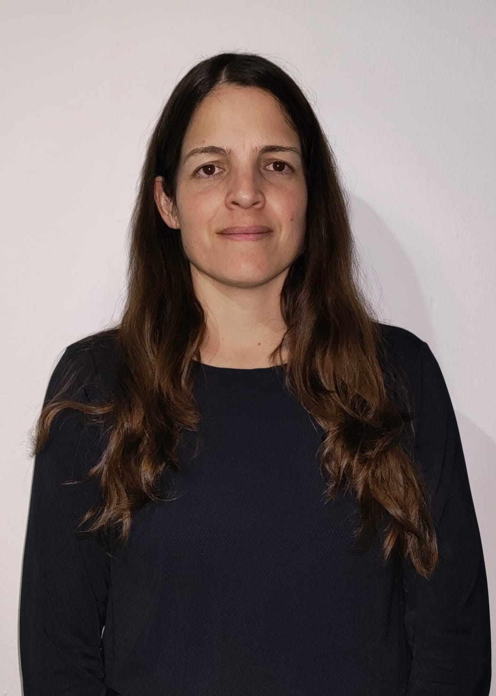
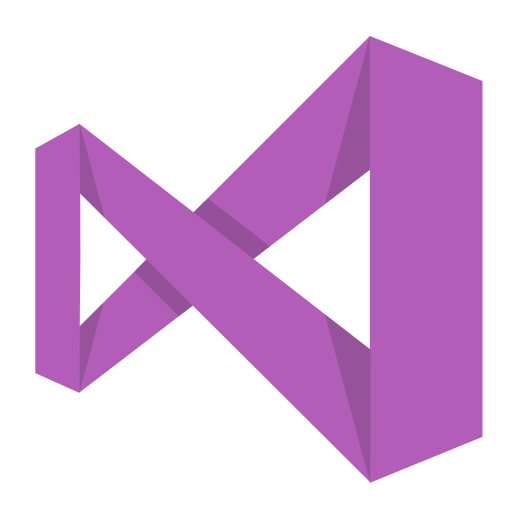
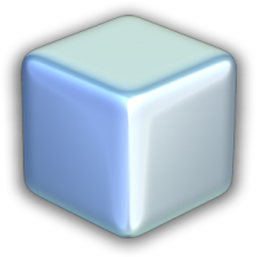
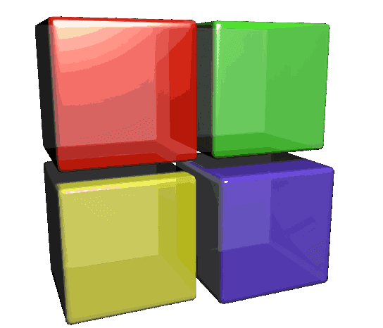
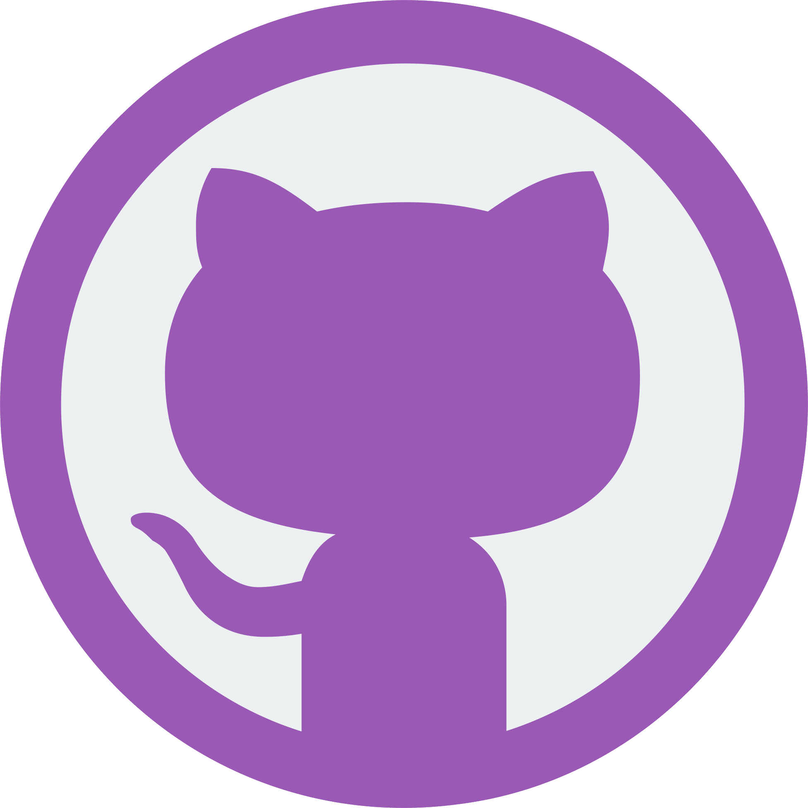

ACERCA DE MI

Actualmente estoy cursando el último cuatrimestre de la Tecnicatura Universitaria en Programación dictada por la UTN, regional de Pacheco. Previamente a esta carrera, había realizado el curso "Argentina Programa 4.0", dictado por la Universidad de La Punta, que me incentivó a profundizar estos conocimientos.
Durante este trayecto, adquirí las herramientas y la lógica necesaria para poder programar sobre una base sólida y poder aplicarlo en diferentes tipos de software.
Además de los conocimientos técnicos, a lo largo de este trayecto también he desarrollado habilidades blandas importantes, como el trabajo en equipo, la resolución de problemas y la adaptabilidad a nuevas tecnologías. Por eso mismo, estoy enfocada en seguir profundizando en el desarrollo full stack y empezar mi experiencia laboral en este rubro.
CONOCIMIENTOS
Lenguajes de Programación:


IDE:




Otros:


MIS PROYECTOS
| GESTIÓN DE PRODUCTOS | VIDEOJUEGO | PAGINA WEB |
|---|---|---|
| Aplicación de escritorio realizada con Winform en C#. Ver más... | Videojuego multijugador de fútbol realizado en C++, junto con las librerías SFML y Box2D y empleando manejo de archivos. Ver más... | Ecommerce realizado con .Net Framework utilizando HTML, CSS, JavaScript y C#. Ver más... |
OTROS ESTUDIOS
Soy Profesora en Educación Física, recibida en la Universidad Nacional de Luján con Diploma de Honor. Tengo experiencia en los distintos niveles de enseñanza escolares, así como, en el ámbito no formal. Trabajé principalmente en clubes y polideportivos, donde me especialicé en la enseñanza de natación a grupos de distintas edades y capacidades. Esto me permitió desarrollar habilidades sociales, manejo de grupos y adaptación a diferentes circunstancias.
Idiomas:
Inglés nivel upper-intermediate.